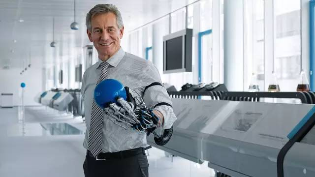
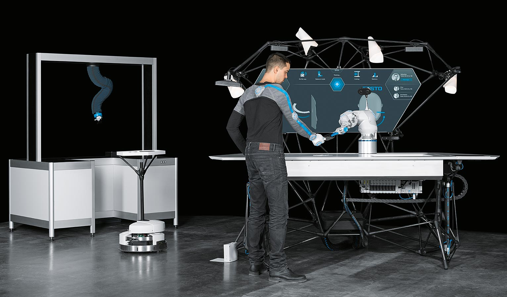

BionicWorkplace
Mensch-Roboter-Kollaboration mit künstlicher Intelligenz
Neben der Serienfertigung gibt es in der Industrie einen Trend hin zur Individualisierung der Produkte. Eine zentrale Rolle bei der Produktion in Losgröße 1 spielen neben der digitalen Vernetzung ganzer Anlagen auch lernfähige Systeme mit künstlicher Intelligenz und Roboter, die Hand in Hand mit dem Menschen zusammenarbeiten. Im BionicWorkplace sind alle diese Anforderungen in einer zukunftsweisenden Arbeitsumgebung vereint.

BionicCobot: Roboterarm mit menschlichen Bewegungsmustern
Zentraler Bestandteil der Arbeitsumgebung ist der BionicCobot. Der pneumatische Leichtbauroboter ist dem menschlichen Arm in seinem anatomischen Aufbau nachempfunden und löst – wie sein biologisches Vorbild – viele Aufgaben mit Hilfe seiner flexiblen und feinfühligen Bewegungen. Aufgrund seiner Nachgiebigkeit und seiner intuitiven Bedienbarkeit kann der BionicCobot unmittelbar und sicher mit dem Menschen interagieren. Dabei unterstützt er den Werker bei monotonen Arbeiten und übernimmt Handgriffe, die für den Menschen gefährlich sind.
Intuitive Bedienkonzepte für eine sichere Interaktion
Im BionicWorkplace arbeitet der bionische Roboterarm mit zahlreichen Assistenzsystemen und Peripheriegeräten zusammen, die miteinander vernetzt sind und untereinander kommunizieren. Gleichzeitig machen künstliche Intelligenz und Machine-Learning-Methoden den BionicWorkplace zu einem lernenden und antizipativen System, das sich kontinuierlich selbst optimiert.
Der gesamte Arbeitsplatz ist ergonomisch gestaltet und bis hin zur Beleuchtung individuell an den Menschen anpassbar. Mittig im Blickfeld des Werkers ist eine große Projektionsfläche. Sie versorgt ihn mit allen relevanten Informationen und reagiert dynamisch mit ihren Inhalten auf die jeweiligen Anforderungen. Um die Projektionsfläche herum sind verschiedene Sensoren und Kamerasysteme angebracht, die permanent die Positionen von Werker, Bauteilen und Werkzeugen erfassen. So kann der Mensch direkt mit dem BionicCobot interagieren und ihn über Bewegung, Berührung oder über die Sprache steuern.

Positionserfassung des Werkers anhand von Wearables
Den Werker und seine Bewegungen erkennt das System an seiner speziellen Arbeitskleidung. Diese sogenannten Wearables bestehen aus einem Langarm-Oberteil, das mit Inertialsensoren ausgestattet ist, und einem Arbeitshandschuh mit integrierten Infrarotmarkern. Mit Hilfe der erfassten Sensordaten kann der BionicCobot seinem menschlichen Kollegen punktgenau Gegenstände übergeben und ihm bei Bedarf ausweichen – eine unabdingbare Voraussetzung für die direkte Kollaboration zwischen Mensch und Roboter.
Maschinelles Lernen optimiert Arbeitsabläufe
Die intelligente Software verarbeitet gleichzeitig sämtliche Kamerabilder, Positionsdaten und Inputs der verschiedenen Peripheriegeräte. Aus allen diesen Informationen leitet sie den optimalen Programmablauf ab. Anschließend verteilt das System die Aufgaben sinnvoll auf den Roboter und die anderen Tools, um den Menschen optimal bei seiner Arbeit zu unterstützen.
Mit jeder gelösten Aktion lernt das System weiter hinzu. Dabei entsteht eine so genannte semantische Karte, die kontinuierlich wächst. Entlang der Netzwerkpfade ziehen die hinterlegten Algorithmen permanent dynamische Schlussfolgerungen. So gelangt man von einem gesteuerten, programmierten und festen Ablauf nach und nach zu einem wesentlich freieren Arbeiten.

Fernmanipulation über Virtual-Reality-Brille
Ein weiteres Element des intuitiven Bedienkonzepts ist die Fernmanipulation. Dazu erfasst eine 3D-Stereokamera mit einem Blickwinkel von 180 Grad den gesamten Arbeitsraum. Gleichzeitig trägt der Werker, der räumlich getrennt agiert, außer den textilen Wearables auch eine Virtual-Reality-Brille. Mit ihr kann er die Bilder der Kamera in Echtzeit abrufen und verfolgen. So lässt sich der Roboter bei räumlicher Trennung oder aus sicherer Distanz steuern.
Durch lernfähige, intelligente Arbeitsplätze wie den BionicWorkplace und den Einsatz multifunktionaler Tools wird das Zusammenwirken von Mensch und Maschine künftig noch intuitiver, einfacher und effizienter. Einmal gelernte Wissensbausteine und neue Fertigkeiten lassen sich grenzenlos teilen und global zur Verfügung stellen. So wäre es möglich, Arbeitsplätze künftig als weltweit vernetzten Verbund mit lokalen Anpassungen aufzubauen – jeweils abgestimmt auf die individuellen Aufgaben und Kundenwünsche vor Ort.

Ein mögliches Zukunftsszenario, das alle wesentlichen Elemente der Robotik vereint: der BionicWorkplace im Zusammenspiel mit dem BionicMotionRobot und einem Robotino®.